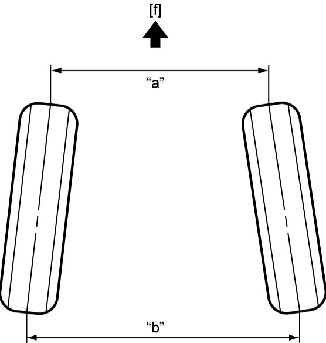

2B
| Front Wheel Alignment Inspection and Adjustment |
Preparation
Perform the following items before checking and adjusting front wheel alignment.
•Check each tire as follows:
•Check wheel (with tire) for deflection. If necessary, repair or replace.
•Check if each suspension part is installed properly. If faulty condition is found, repair or replace.
•Check that each suspension part is free from bend, dent, wear or damage.
•Place vehicle in non-loaded state on level surface.
•Set steering wheel in straight ahead position.
•Bounce vehicle up and down several times to stabilize suspension.
•Check that ground clearance at the right and left is almost the same.
—Check that tire is of specified size. Replace tire with correct one if necessary.
—Check that tire is inflated correctly. Adjust pressure if necessary.
—Check that tire does not have abnormal wear and is not worn more than the other tires. Replace tire with proper one if necessary.
—Check that tire is of the same brand as the other tires. Replace tire with one of correct brands if necessary.
•Check that wheel bearing is not damaged. Replace wheel bearing if defective.—Check that tire is inflated correctly. Adjust pressure if necessary.
—Check that tire does not have abnormal wear and is not worn more than the other tires. Replace tire with proper one if necessary.
—Check that tire is of the same brand as the other tires. Replace tire with one of correct brands if necessary.
•Check wheel (with tire) for deflection. If necessary, repair or replace.
•Check if each suspension part is installed properly. If faulty condition is found, repair or replace.
•Check that each suspension part is free from bend, dent, wear or damage.
•Place vehicle in non-loaded state on level surface.
•Set steering wheel in straight ahead position.
•Bounce vehicle up and down several times to stabilize suspension.
•Check that ground clearance at the right and left is almost the same.
Toe Inspection
Measure toe using toe-in gauge (1).
If toe is out of specification, adjust it at tie-rod.
 "Expand image")
Front toe (Total)
“b” – “a”
:
IN 1 ± 1 mm (IN 0.04 ± 0.04 in.)

 "Expand image")
| [f]: | Forward |
Toe Adjustment
NOTICE:
The rack boot may break if it is twisted.
Check that the rack boot does not get twisted during adjustment of front wheel alignment.
NOTE:
Never adjust only right or left tie-rod, adjust both tie-rods by the same amount.
1)Loosen tie-rod end lock nuts.
2)Tighten or loosen right and left tie-rods by the same amount to adjust toe to specification.
3)Check that length “a” on right tie-rod is equal to that on left tie-rod. If they are not equal, readjust toe.

 "Expand image")
4)Tighten tie-rod end lock nuts to specified torque. 
Reference Information
Side slip
Side slip (On one person)
:
0 to IN 3 mm/m (0 to IN 0.12 in./3.3 ft.)
If side slip deviates from specification greatly, front wheel alignment may be out of specification.
Toe angle
Front toe angle (Each wheel)
:
IN 0° 03’ ± 0° 03’
Front toe angle (Total)
:
IN 0° 06’ ± 0° 06’
If front toe angle is out of specification, adjust it at the tie-rod.
Camber, Caster and Kingpin Inclination Angle Inspection
Check camber, caster and kingpin inclination angle using camber caster kingpin gauge (1) and turning radius gauge (2). If measured value is not as specified, check the following items for damage, deformation and crack. Repair or replace any defective part.
•Strut assembly components
•Suspension arms and bushings
•Front suspension frame
•Front wheel hubs, steering knuckles and wheel bearings
•Vehicle body

•Suspension arms and bushings
•Front suspension frame
•Front wheel hubs, steering knuckles and wheel bearings
•Vehicle body
 "Expand image")
Front camber
“a”
:
–0° 14’ ± 1° 00’
Front caster
“b”
:
3° 35’ ± 2° 00’
Front kingpin inclination angle
“c”
:
12° 11’ ± 2° 00’
NOTE:
Camber, caster and kingpin inclination angle are not adjustable. If they are out of specification, repair vehicle body or replace related part.
 "Expand image")
| [A]: | Camber and kingpin inclination angle (Front view) | [f]: | Forward |
| [B]: | Caster (Side view) | [k]: | Center line of kingpin |
| “d”: | 90° | [s]: | Vehicle body center |
| 1. | Suspension arm joint | [t]: | Center line of wheel |
| 2. | Strut support |
Steering Angle Inspection and Adjustment
When tie-rod or tie-rod end is replaced, check toe and then also steering angle using turning radius gauge. If measured value is not as specified, check and adjust toe.
Inside steering angle
:
36° 30’ ± 2° 00’
Outside steering angle (Reference)
:
31° 05’ ± 2° 00’